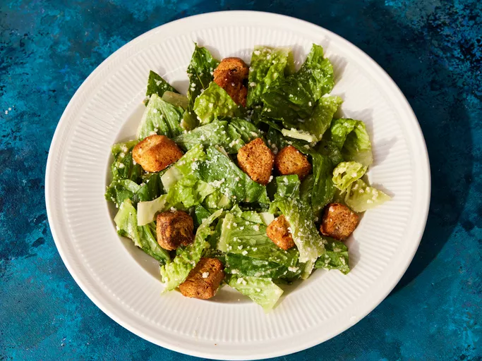

← Home
Caesar Salad Recipe

Classic Caesar's Salad
This is an unbelievable, restaurant-quality, creamy Caesar Salad that will make you swear off of anything store-bought again. Will NOT disappoint!
Ingredients
Dressing:
- 3 anchovy fillets
- 2 cloves garlic, finely chopped
- ½ lemon, juiced
- 2 tablespoons red wine vinegar
- 1 large egg yolk
- 1 tablespoon Dijon mustard
- 1 dash Worcestershire sauce
- ¼ cup olive oil
- salt and ground black pepper to taste
Salad:
- ½ head romaine lettuce, chopped
- ¼ cup grated Parmesan cheese
- 2 tablespoons croutons
Directions
- Gather all ingredients.
- To make the dressing: Mash anchovy fillets and garlic in a large salad bowl. Add lemon juice, red wine vinegar, Dijon mustard, egg yolk, and Worcestershire sauce; whisk until smooth and creamy. Gradually stream in olive oil while whisking constantly. Season with salt and black pepper.
- Make salad: Gently mix romaine lettuce and Parmesan cheese into dressing until thoroughly coated.
- Serve salad topped with croutons.